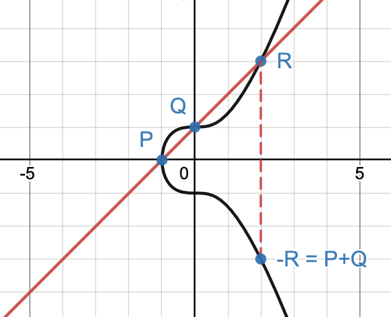
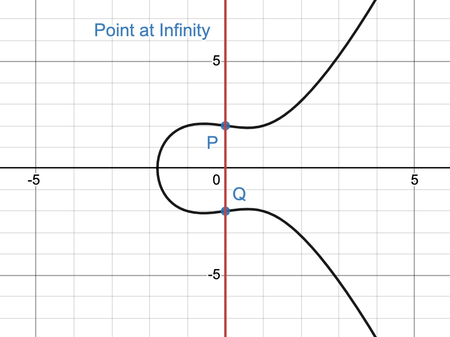

Elliptic Curve Diffie-Hellman is a key exchange protocol.
It is used when two parties wish to compute some shared secret which can be used for symmetric cryptography.
It is based on Diffie-Hellman key exchange, but uses elliptic curves to provide better security.
Diffie Hellman Overview
Diffie Hellman is a key exchange protocol invented by cryptographers Whitfield Diffie and Martin Hellman.
It is useful when two parties want to create a shared secret when communicating over an unsecure channel.
Created in 1976, it was the first ever public key cryptosystem.
For two parties named Alice and Bob, the protocol works as follows:
Alice & Bob agree publicly to a prime modulus (p) and a base (g) which is coprime to p.
Alice chooses a random integer a to be her secret key, and Bob chooses a random integer b as his.
Alice computes A = ga mod p, Bob computes B = gb mod p, and both parties publish this value.
To find the shared secret s, Alice computes s = Ba mod p, and Bob computes s = Ab mod p.
This technique works to arrive at the same value for s because modular exponentiation is associative, meaning the result is not impacted by the order in which exponents are applied.
In this case, Alice's value for s is equal to (gb)a mod p, and Bob's value is (ga)b mod p, which are equivalent.
Now consider the viewpoint of an attacker; the only information shared publicly during this protocol is p, g, A, & B.
There are no known algorithms that are able to compute s efficiently given only these parameters.
As a result, for large key sizes, it is infeasible for an attacker to break this cipher.
Bob and Alice can now use s for symmetric encryption.
Elliptic Curves and Group Operations
Before we can delve into the ECDH protocol, we must first establish some mathematical preliminaries to understand the operations being performed.
Let's begin by defining an elliptic curve.
An elliptic curve is a curve of the form y2 = x3 + ax + b, where a and b are constants and 4a3 + 27b2 ≠ 0.
Figure 1: Graph of an elliptic curve with equation y2 = x3 - x + 3
For cryptography, elliptic curves are considered to be a set of discrete integer points which satisfy the equation for the curve over a finite field.
This set is denoted as E(Fp) = {(x,y) : y2 ≡ x3 + ax + b (mod p)}.
The order of a set is the number of elements contained by the set, and is denoted as #E(Fp).
For elliptic curve cryptography, we define three operations for this set: point addition, point doubling, and scalar multiplication.
Point Addition
Given two (x,y) points P and Q such that P, Q ∈ E(Fp), we can define a third point that is the result of point addition between P & Q.
To find P+Q, one first draws a line connecting the two points. If xP ≠ xQ, this line will intersect the curve at a third point, R.
P+Q is defined as the point R reflected over the x-axis, which is called -R.

Figure 2: Graphical representation of point addition. Curve equation: y2 = x3 + 1.
P = (-1, 0), Q = (0, 1). P+Q = -R = (2, -3).
To compute P+Q, the slope of the line between P & Q is first calculated using the rise-over-run equation s = (yP - yQ)/(xP - xQ).
For the above example, we get s = (0 - 1)/(-1 - 0) = 1. From here, we can find xP+Q = s2 - xP - xQ, and yP+Q = s(xP - xP+Q) - yP.
Point Doubling
What happens if the two points we want to add are equal, meaning P = Q.
In this scenario, we can find a tangent line to the elliptic curve and then follow the same process as before to find -R.
This operation is called point doubling, and can be denoted as 2P.
Figure 3: Graphical representation of point doubling. Curve equation: y2 = x3 -4x + 4.
P = (0, 2). 2P = -R = (1, -1).
To compute point doubling, we begin once again by finding the slope.
Since the finding the tangent line requires the instantaneous rate of change of the curve, calculus is required to derive the slope equation.
Point at Infinity
But what happens if P ≠ Q, but xP = xQ?
In this case, the line drawn between the two points is vertical, and does not intersect the curve at a third point.
This will pose a problem for our group operations, so to bypass this issue we say that P+Q is the "point at infinity", which is denoted as a fancy looking O.
In the earlier section on elliptic curves, I said that E(Fp) = {(x,y) : y2 ≡ x3 + ax + b (mod p)}.
This set is actually not including the point at infinity, so it should be written as E(Fp) = {(x,y) : y2 ≡ x3 + ax + b (mod p)} ∪ {O}.

Figure 4: Since P and Q both have the same x coordinate, P+Q = O, the point at infinity.
Scalar Multiplication
The final elliptic curve operation, scalar multiplication, builds on the previously discussed operations.
Scalar multiplication is essentially just point addition, repeated k times.
To compute kP, where P ∈ E(Fp), we will begin by finding 2P using point doubling.
From there we will compute 3P to be point addition between P and 2P.
Then, 4P = P+3P, 5P = P+4P, and so on until k is reached.
How ECDH works
Elliptic Curve Diffie Hellman relies on analogous concepts and techniques, but uses elliptic curve operations as a stronger trapdoor function.
Suppose Alice and Bob now wish to instead use ECDH to find a shared secret.
Once again, they will first decide upon a prime modulus.